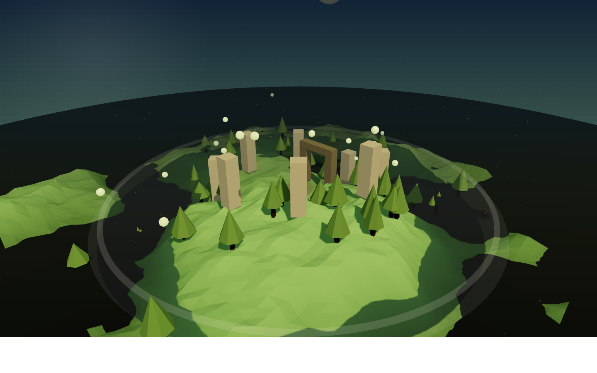
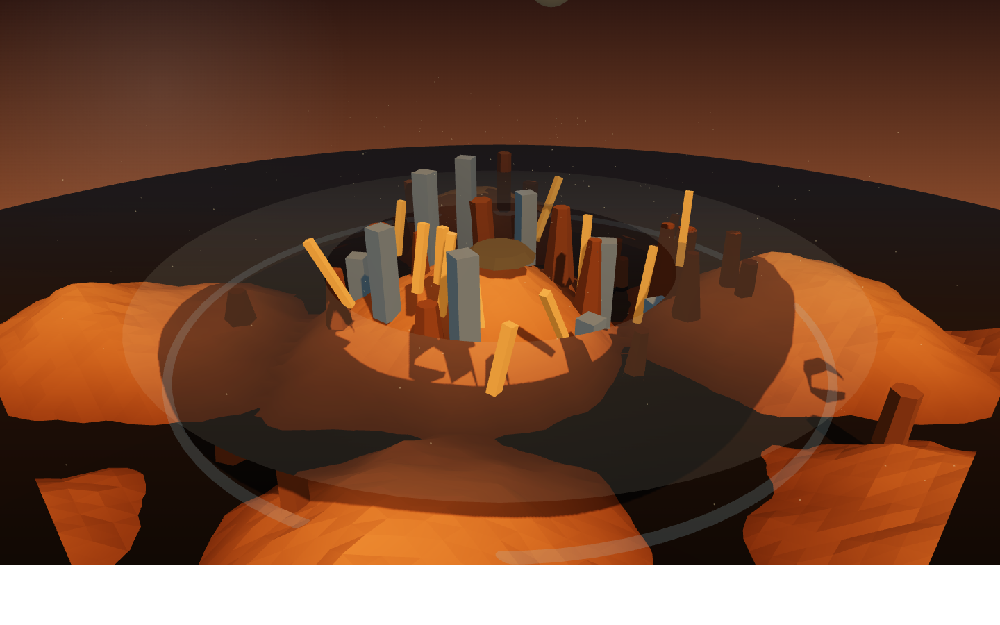
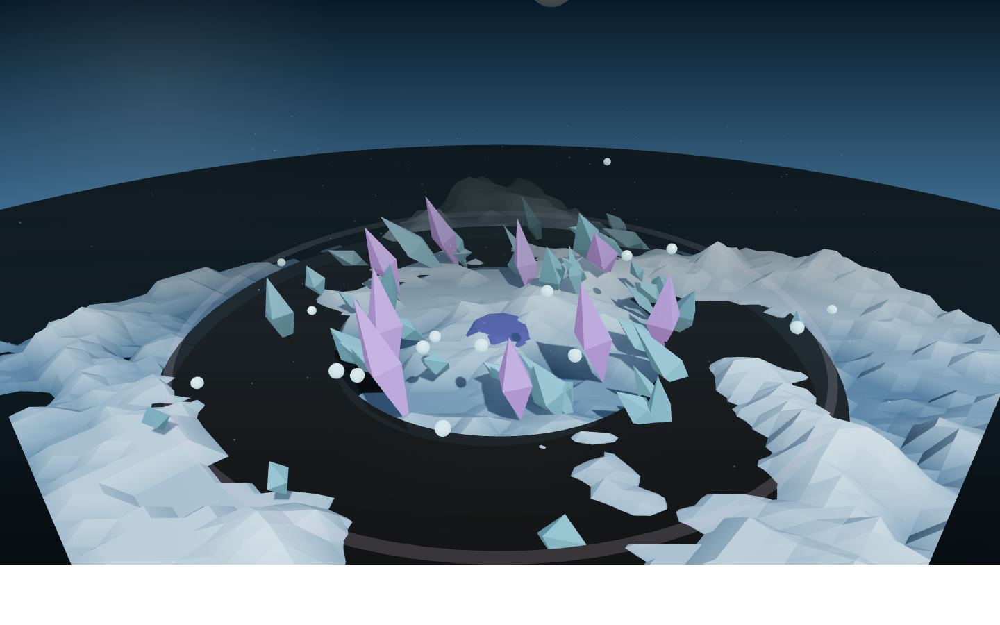
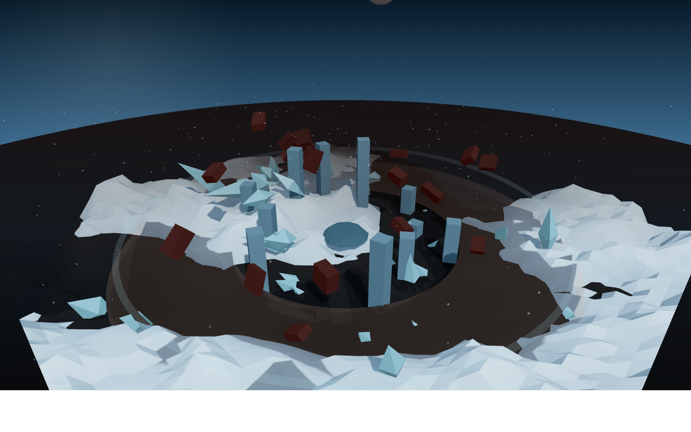

본 프로젝트는 게임 속 플레이어의 선택이 실시간으로 가상 세계의 형태를 바꾸는 비주얼 프로토타입입니다. 사용자는 게임 진행 중 세 가지 결정 단계, 즉 기후(Climate), 지배적인 힘(Power), 긴장도(Tension)를 선택하고, 그 즉시 월드의 지형 실루엣, 랜드마크 구조, 조명, 색 분위기, 파티클 감각이 함께 변화하는 결과를 확인할 수 있습니다.
텍스처나 복잡한 재질 대신 단순한 기하학 도형, 기본 조명, 솔리드 컬러만으로 장면을 구성하여 “형태와 분위기” 중심의 게임 월드 아트 방향성을 빠르게 검토할 수 있도록 설계했습니다.
| Primary | 게임 아트 디렉터 / 비주얼 디자이너: 플레이어 선택에 따라 월드의 분위기와 실루엣이 어떻게 달라지는지 빠르게 검토 |
|---|---|
| Secondary | 레벨 디자이너 / 내러티브 디자이너: 스토리 분기와 공간 변화가 연결되는 방식을 컨셉 단계에서 실험 |
| Tertiary | 플레이어 테스트 참가자: 자신의 선택이 세계에 직접 반영되는 감각을 짧은 웹 프로토타입으로 체험 |
이 프로토타입의 핵심 아이디어는 플레이어의 선택이 곧 세계의 지형 문법이 된다는 점입니다. 조용한 선택은 안정적인 구도와 부드러운 빛을 만들고, 위험한 선택은 붕괴, 균열, 떠오르는 파편 같은 불안정한 형태를 만듭니다.
전체 장면은 텍스처 없이 솔리드 컬러와 기본 조명만 사용하여 구성했습니다. 따라서 월드의 감정과 방향성은 표면 디테일이 아니라 형태, 실루엣, 밀도, 조명 대비로 전달됩니다. 이는 게임의 초기 컨셉 단계에서 매우 빠른 비주얼 검토를 가능하게 합니다.




| Framework | Three.js r162 (ES Module via CDN) |
|---|---|
| Rendering | WebGL, ACES tone mapping, flat-shaded low-poly materials |
| Geometry | Plane terrain + Cone / Box / Cylinder / Octahedron / Torus primitives |
| Lighting | AmbientLight, HemisphereLight, DirectionalLight, PointLight |
| Interaction | OrbitControls, live choice buttons, seed regeneration, shareable URL query |
| Design Focus | No textures or complex materials; only shape, color, and basic lighting for fast art-direction review |